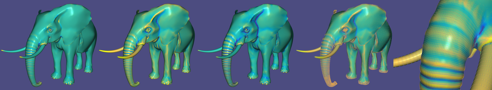
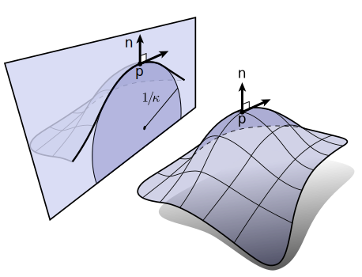
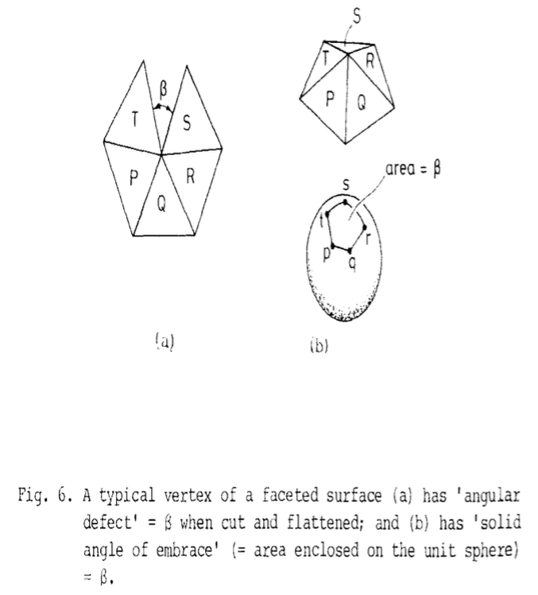

\(\newcommand{\A}{\mat{A}}\)
\(\newcommand{\B}{\mat{B}}\)
\(\newcommand{\C}{\mat{C}}\)
\(\newcommand{\D}{\mat{D}}\)
\(\newcommand{\E}{\mat{E}}\)
\(\newcommand{\F}{\mat{F}}\)
\(\newcommand{\G}{\mat{G}}\)
\(\newcommand{\H}{\mat{H}}\)
\(\newcommand{\I}{\mat{I}}\)
\(\newcommand{\K}{\mat{K}}\)
\(\newcommand{\L}{\mat{L}}\)
\(\newcommand{\M}{\mat{M}}\)
\(\newcommand{\N}{\mat{N}}\)
\(\newcommand{\One}{\mathbf{1}}\)
\(\newcommand{\P}{\mat{P}}\)
\(\newcommand{\Q}{\mat{Q}}\)
\(\newcommand{\Rot}{\mat{R}}\)
\(\newcommand{\R}{\mathbb{R}}\)
\(\newcommand{\S}{\mathcal{S}}\)
\(\newcommand{\T}{\mat{T}}\)
\(\newcommand{\U}{\mat{U}}\)
\(\newcommand{\V}{\mat{V}}\)
\(\newcommand{\W}{\mat{W}}\)
\(\newcommand{\X}{\mat{X}}\)
\(\newcommand{\Y}{\mat{Y}}\)
\(\newcommand{\argmax}{\mathop{\text{argmax}}}\)
\(\newcommand{\argmin}{\mathop{\text{argmin}}}\)
\(\newcommand{\c}{\vec{c}}\)
\(\newcommand{\d}{\vec{d}}\)
\(\newcommand{\e}{\vec{e}}\)
\(\newcommand{\f}{\vec{f}}\)
\(\newcommand{\g}{\vec{g}}\)
\(\newcommand{\mat}[1]{\mathbf{#1}}\)
\(\newcommand{\min}{\mathop{\text{min}}}\)
\(\newcommand{\n}{\vec{n}}\)
\(\newcommand{\p}{\vec{p}}\)
\(\newcommand{\q}{\vec{q}}\)
\(\newcommand{\r}{\vec{r}}\)
\(\newcommand{\transpose}{{\mathsf T}}\)
\(\newcommand{\tr}[1]{\mathop{\text{tr}}{\left(#1\right)}}\)
\(\newcommand{\t}{\vec{t}}\)
\(\newcommand{\u}{\vec{u}}\)
\(\newcommand{\vec}[1]{\mathbf{#1}}\)
\(\newcommand{\x}{\vec{x}}\)
\(\newcommand{\y}{\vec{y}}\)
\(\newcommand{\z}{\vec{z}}\)
\(\renewcommand{\v}{\vec{v}}\)
\(\renewcommand{\hat}[1]{\widehat{#1}}\)
Geometry Processing – Curvature
To get started: Fork this repository then issue
git clone --recursive http://github.com/[username]/geometry-processing-curvature.git
Installation, Layout, and Compilation
See
introduction.
Execution
Once built, you can execute the assignment from inside the build/ by running
on a given mesh:
./curvature [path to mesh.obj]

Once built you may toggle between showing Gaussian curvature, mean/min/max
curvature and displaying principal curvature directions.
Background
In this assignment we explore discrete curvature quantities computed on a
surface. These quantities give us local information about a shape. Beyond
inspecting the surface (the extent of this assignment), these quantities become
the building blocks to:
- define energies to minimize during smoothing/deformation,
- identify salient points and curves on the shape, and
- provide initial conditions/constraints for remeshing.
The fundamental difference between a segment on the real line and a curve is
the introduction of curvature. This
is quite natural and intuitive. When we draw a 1D object in the plane or in
space we have the freedom to let that object bend. We quantify this “bending”
locally as curvature.
Curvature is also the
fundamental difference between a chunk (i.e., subregion) of the Euclidean
Plane and a
surface that has been
immersed in \(\R^3\) (or
elsewhere). Unlike curves, surfaces can bend in each direction at any point.
We start our discussion assuming a smooth surface \(\S\). We would like to
categorize points on the surface \(\p ∈ \S\) in terms of how the surface bends or
curves locally.
Curvature of planar curves
Let us briefly recall how
curvature is
defined for a planar curve
\(γ:[0,1] → \R²\).
There are multiple equivalent definitions.
Osculating circle
We can define the tangent direction at
a point \(\p = γ(s)\) as the limit of the
secant formed between \(\p\) and
another point on the curve \(\q = γ(t)\) as \(\q\) approaches \(\p\):

\[
\t(s) = \lim_{\q→\p} \frac{\q-\p}{\|\q-\p\|} =
\lim_{t→s} \frac{γ(t)-γ(s)}{\|γ(t)-γ(s)\|} = \frac{γ'(s)}{\|γ'(s)\|}.
\]
It always possible, and often convenient, to assume without loss of generality
that \(s\) is an arc length
parameterization of the curve \(γ\) so
that \(\|γ'\| = 1\) and therefor the unit tangent vector is simply \(\t(s) =
γ'(s)\).
In an analogous fashion, we can consider the limit of the
circumcircle
\(C(\q₁,\p,\q₂)\) that passes
through \(\p\) and points \(\q₁\) and \(\q₂\) before and after it on the curve:
\[
C(\p) = \lim_{\q₁,\q₂→\p} C(\q₁,\p,\q₂).
\]

This limit circle is called the osculating
circle at the point \(\p\) on
the curve \(γ\). By construction the tangent of the curve and the circle match at
\(\p\): they’re both \(γ'\). The
radius \(R(\p)\) of the
osculating circle \(C(\p)\) at the the point \(\p\) is proportional to how straight
the curve is locally: as the curve becomes more and more straight then the
radius tends toward infinity. This implies that the radius is inversely
proportional to the “curvy-ness” of the curve. Hence, the inverse of the radius
is dubbed the curvature:
\[
κ(\p) = \frac{1}{R(\p)}.
\]
The radius is a non-negative measure of length with units meters, so the
curvature \(κ\) is an non-negative scalar with units 1/meters. The radius of the
osculating circle can also be written as a limit of the circumcircle
radius:
\[
R(\p) = \lim_{\q₁,\q₂→\p}
\frac{‖\q₁-\p‖ ‖\p-\q₂‖ ‖\q₂-\q₁‖}
{2\left| (\q₁-\p) \quad (\p-\q₂)\right|}.
\]
Signed curvature
Plugging in our arc-length parameterization this reveals that the curvature
(inverse of radius) is equal to the magnitude of change in the tangent or
equivalently the magnitude of second derivative of the curve:
\[
κ(s) = \lim_{t→s} \left\| \frac{γ'(t)-γ'(s)}{t-s} \right| = ‖γ''(s)‖.
\]
Because we chose the arc-length parameterization, the only change to the
tangent vector \(γ'\) is a change in direction (as opposed to magnitude, since
\(‖γ'‖ := 1\)). This means that the change–as a vector itself–is
orthogonal to the tangent. In other words, the change in tangent \(γ''\) points
along the normal direction \(\hat{\n}\):
\[
γ'' ⋅ γ' = 0 \quad → \quad γ'' ⋅ \hat{\n} = ± κ \hat{\n}.
\label{equ:curvature-normal}
\]
If we define an orientation to our curve then we can endow the curvature with
a sign based on whether the
center of the osculating circle lies on the left or right
side of the curve. As already
established, the tangent of the osculating circle and the curve agree, so the
vector pointing toward the circle’s center must be
perpendicular to the tangent:
i.e., in either the positive or negative
normal directions.
If the orientation agrees with increasing the arc-length parameter \(s\), then the sign can
be
determined by comparing the second derivative vector \(γ''\) to the unit normal
\(\hat{\n} :=
(γ')^⊥\). The signed
curvature at a point \(\p\) is thus given by:
\[
\begin{align}
k(\p) &= \text{sign}(γ''(\p)⋅\hat{\n}))\ κ(\p) \\
&= γ''(\p) ⋅ \hat{\n}.
\end{align}
\]
Moving point analogy
This definition neatly conforms to our intuition of a curve as the trajectory
of a moving point. Imagine the curved formed by driving along a particular
trajectory \(γ(t)\), where we really interpret \(t\) as time.
While \(γ'(t)\) corresponds to your velocity vector and \(‖γ'(t)‖\) corresponds to
your speed, the arc-length (re-)parameterization would correspond to having
your friend re-trace your path traveling at a perfectly uniform speed \(‖γ'(s)‖
= 1\), where your friends “time” \(s\) may be different from yours (it may take
longer or shorter depending if you drove fast or slow).
Curvature in the path corresponds to turning and quite literally the amount
by which your friend needs to turn the steering wheel away from the “straight”
position: on a straight course, the steering wheel remains at zero-angle
position and the curvature is zero, on a circular course the steering wheel is
fixed at a constant angle in the left or right direction corresponding to
constant positive or negative curvature respectively.
Changing the steering wheel changes the direction of the vehicle’s velocity.
For your friend driving at constant speed, this is the only change admissible
to the velocity, hence the curvature exactly corresponds to \(γ''(s)\) and to the
steering wheel angle.
If somebody wants to make a Sega Out
Run inspired gif showing a steering
wheel turning next to a little car tracing a curve, I’ll be very impressed.
Turning number
The integrated signed curvature around a closed
curve must be an integer multiple of
\(2π\):
\[
∮ k(s) \ ds = 2π τ,
\]
where τ is an integer called the “turning number” of the curve.
This is a bit surprising at first glance. However, in the moving point
analogy a closed curve corresponds to a period trajectory (e.g., driving
around a race-track). When we’ve made it once around the track, our velocity
direction (e.g., the direction the vehicle is facing) must be pointing in the
original direction. That is, during the course, the car either have turned all the
way around once (\(τ = 1\)) or turned as much clockwise and it did
counter-clockwise (e.g., on a figure 8 course: \(τ=0\)), or made multiple
loops, etc.
Discrete curvature
In the discrete world, if a curve is represented as a piecewise-linear chain of
segments, then it’s natural to associate curvature with vertices: the segments
are flat and therefor contain no curvature.
A natural analog to the definition of curvature as
the derivative of the tangent vector
(i.e., \(k = ‖γ''‖ = ‖\t'‖\)) is to define discrete curvature as the change in
tangent direction between discrete segments meeting at a vertex:
\[
k_i = ∠ (\v_i - (\v_{i-1}-\v_i)) \v_i\v_{i+1} = θ_i,
\]
that is, the signed exterior
angle \(θ_i\) at
the vertex \(\v_i\).

The turning number theorem for continuous curves finds an immediate analog in
the discrete case. For a closed polygon the discrete signed angles must sum up
to a multiple of \(2π\) in order to close up:
\[
∑_{i=1}^n k_i = 2π τ.
\]
In this way, we preserve the structure found in the continuous case in our
discrete analog. This structure preservation leads to an understanding of the
exterior angle as an approximation or discrete analog of the locally
integrated curvature.
Alternatively, we could literally fit an circle to the discrete curve based on
local samples and approximate curvature as the inverse radius of the osculating
circle. This curvature measure (in general) will not obey the turning number
theorem, but (conducted properly) it will converge to the pointwise continuous
values under refinement (e.g., as segment length shrinks).
We will explore these two concepts for surfaces, too: discrete analogs that
preserve continuous structures and discretizations that approximate continuous
quantities in the limit.
Curvature(s) on surfaces
A surface can be curved locally in multiple ways. Consider the difference
between a flat piece of paper, a spherical ping-pong ball and a saddle-shaped
Pringles chip. The Pringles chip is
the most interesting because it curves “outward” in one direction and “inward”
in another direction. In this section, we will learn to distinguish and
classify points on a surface based on how it curves in each direction.
Normal curvature
The simplest way to extend the curvature that we defined for planar curves to a
surface \(\S\) is to slice the surface through a given point \(\p∈\S\) with a
plane \(\P\) that is parallel
to the surface normal
\(\n(\p)\).
The (local) intersection of the surface \(\S\) and the plane \(\P\) will trace a
curve \(γ\), upon which we can immediately use the planar curvature definition
above.

Source
There are infinitely many planes that pass through a given point \(\p\) and lie
parallel to a given normal vector \(\n(\p)\): the plane can rotate around the
normal \(\n(\p)\) by any angle \(φ\). For each choice of \(φ\), the plane will define
an intersecting curve \(γ_φ\) and thus for every angle \(φ\) there will be a
normal curvature:
\[
k_\n(φ,\p) = γ''_\n(\p).
\]
Mean curvature
Normal curvature requires choosing an angle, so it doesn’t satiate our
desire to reduce the “curvy-ness” to a single number for any point on the
surface. A simple way to reduce this space of normal curvatures is to, well,
average all possible normal curvatures. This defines the mean
curvature:
\[
H(\p) = \frac{1}{2π}∫_0^{2π} k_\n(φ,\p) \ dφ.
\]
Maximum and minimum curvature
Another obvious way to reduce the space of normal curvatures to a single number
is to consider the maximum or minimum normal curvature over all choices of \(φ\):
\[
\begin{align}
k₁(\p) &= \max_φ \ k_\n(φ,\p) \\
k₂(\p) &= \min_φ \ k_\n(φ,\p).
\end{align}
\]
Collectively, these are referred to as the principal
curvatures and
correspondingly the angles that maximize and minimize curvature are referred to
as the principle curvature directions:
\[
\begin{align}
φ₁(\p) &= \argmax_φ \ k_\n(φ,\p) \\
φ₂(\p) &= \argmin_φ \ k_\n(φ,\p).
\end{align}
\]
Euler’s
theorem
states that the normal curvature is a quite simple function of \(φ\) and the
principle curvatures:
\[
k_\n(φ,\p) = k₁ \cos^2 φ + k₂ \sin^2 φ,
\]
(proof).
There are two immediate and important consequences:
- the principal curvature directions (\(φ₁\) and \(φ₂\)) are orthogonal, and
- the mean curvature reduces to the average of principal curvatures:
\[
H = ½(k₁ + k₂).
\]
For more theory and a proof of Euler’s theorem, I recommend “Elementary
Differential Geometry” by Barret O’Neill, Chapter 5.2.
Gaussian curvature
Maximum, minimum and mean curvature reduce curvature to a single number, but
still cannot (alone) distinguish between points lying on a round ping-pong
ball, a flat sheet of paper, the cylindrical Pringles can and a saddle-shaped
Pringles chip.
The neck of this cartoon elephant–like a Pringles chip–bends inward in one
direction (positive \(k₁ > 0\)) and outward in the other
direction (negative \(k₂ < 0\)).
 Maximum \(k₁\), minimum \(k₂\),and Gaussian curvature \(K = k₁k₂\)
Maximum \(k₁\), minimum \(k₂\),and Gaussian curvature \(K = k₁k₂\)
The product of the principal curvatures maintains the disagreement in sign
that categories this saddle-like behavior. This product is called Gaussian
curvature:
\[
K = k_1 k_2.
\]
Relationship to surface area
Both mean and Gaussian curvature have meaningful relationships to surface
area.
Mean Curvature as area gradient
Let us consider a seemingly unrelated yet familiar problem. Suppose we would
like to minimize the surface area of a given shape \(\S\).
If we consider a small patch \(A ⊂ \S\) centered around some point \(\p ∈\S\), then
we can imagine forces at the boundary of the patch \(∂A\) that try to shrink the
area of the patch. These “surface tension” forces point inward against the
normal direction of the patch boundary \(η\). Consider the integral effect of
these forces and apply divergence
theorem to move the integral
to the interior of the patch.
\[
∮_{∂A} -η \;ds = ∮_{∂A} \n × d\x = ∫_A ∆\x \;dA,
\]
where \(\n\) is the surface normal, \(d\x\) is the infinitesimal change in position
around the boundary of the patch, and \(∆\x ∈ \R³\) computes the
Laplacian of the position
coordinate functions.
In the limit as \(A\) shrinks around any point on the surface,
this relationship gives us the intuition that moving the surface in the
direction \(∆\x\) will decrease the surface area.
The Laplacian \(∆f\) of a function \(f\) on the surface does not depend on the
choice of parameterization. It is defined as the divergence of the gradient of
the function or equivalently the trace of the Hessian:
\[
∆f = ∇⋅ ∇f = \tr{
\left[
\begin{array}{cc}
\frac{∂²f}{∂u²} & \frac{∂²f}{∂u∂v} \\
\frac{∂²f}{∂v∂u} & \frac{∂²f}{∂v²}
\end{array}
\right]
}
=
\frac{∂²f}{∂u²} + \frac{∂²f}{∂v²}.
\]
If we generously choose \(u\) and \(v\) to vary in the principal directions \(φ₁\)
and \(φ₂\) above. In this case, the Laplacian \(∆\x\) of the position function
reduces to the sum of principal curvatures times the normal (recall Equation
\((\ref{equ:curvature-normal})\)):
\[
\begin{align}
∆\x &= \frac{∂²\x}{∂u²} + \frac{∂²\x}{∂v²} \\
&= k₁ \n + k₂ \n \\
&= 2H\n,
\end{align}
\]
where \(H\n ∈ \R³\) is called the mean curvature normal vector. We have
shown that the mean curvature normal is equal half the Laplacian of the
embedding function.
Gaussian Curvature as area distortion
As the product of principal curvatures, Gaussian curvature \(K = k₁k₂\) measures zero
anytime one (or both) of the principal curvatures are zero. Intuitively, this
happens only for surfaces that curve or bend in one direction. Imagine rolling
up a sheet of paper. Surfaces with zero Gaussian curvature \(K = 0\) are called
developable surfaces because the can be flattened (developed) on to the flat
plane (just as you might unroll the piece of paper) without stretching or
shearing. As a corollary, surfaces with non-zero Gaussian curvature cannot be
flattened to the plane without stretching some part.
Locally, Gaussian curvature measures how far from developable the surface is:
how much would the local area need to stretch to become flat.
First, we introduce the Gauss map, a
continuous map \(N:\S→S²\) from every point \(\p\) on the surface \(\S\) to the unit
sphere \(S²\) so that \(N(\p) := \n(\p)\), the unit normal at \(\p\).
Consider a small patch on a curved surface. Gaussian curvature \(K\) can
equivalently be defined as the limit of the ratio between the area
area swept out by the unit normal on the Gauss map \(A_G\) and
the area of the surface patch \(A\):
\[
K = \lim_{A→0} \frac{A_G}{A}.
\label{equ:gaussian-curvature-area}
\]
Let’s consider different types of regions:
- flat: \(A_G=0\) because the Gauss map is a point,
- cylindrical: \(A_G=0\) because the Gauss map is a curve,
- spherical: \(A_G>0\) because the Gauss map will maintain positive swept-area,
and
- saddle-shaped: \(A_G<0\) because the area on the Gauss map will maintain
oppositely oriented area (i.e., from the spherical case).


Similar to the turning number theorem for curves, there exists an analogous
theorem for surfaces
stating that the total Gaussian curvature must be an integer multiple of \(2π\):
\[
∫_S K dA = 2π χ(\S),
\label{equ:gauss-bonnet}
\]
where \(χ(\S)\) is the Euler
characteristic of the
surfaces \(\S\) (a topological invariant of the surface revealing how many
holes the surface has).
In stark contrast to mean curvature, this theorem tells us that we cannot add
Gaussian curvature to a surface without:
- removing an equal amount some place else, or
- changing the topology of the surface.
Since changing the topology of the surface would require a discontinuous
deformation, adding and removing Gaussian curvature must also balance out for
smooth deformations. This simultaneously explains why a cloth must have
wrinkles when draping over a table, and why a deflated basketball will not lie
flat on the ground.
Shape operator
There is yet another way to arrive at principal, mean and Gaussian curvatures.
Consider a point \(\p\) on a surface \(\S\) with unit normal vector \(\n\). If we
pick a unit tangent vector \(\v\) (i.e., so that \(\v ⋅ \n = 0\)), then we can ask
how does the normal \(\n\) change as we move in the direction of \(\v\) along the
surface:
\[
S_\p(\v) := ∇ \n ⋅ \v
\]
we call \(S_\p\) the shape
operator
at the point \(\p\). Just as how in Equation \((\ref{equ:curvature-normal})\) the
curvature normal must point in the normal direction, the shape operator takes
as input a tangent vector and outputs another tangent vector (i.e., the change
in the unit normal must be tangential to the surface; no change can occur in
the normal direction itself).
Locally, the tangent vector space is two-dimensional spanned by basis vectors
\(\e₁,\e₂ ∈ \R²\) so we can think of the
shape operator as a mapping from \(\R²\) to \(\R²\). As a differential operator,
the shape operator is a linear operator. This means we can represent its
action on a tangent vector \(\v = x₁ \e₁ + x₂\e₂\) as a matrix:
\[
S_\p(\v) =
\left[
\begin{array}{cc}
S_\p(\e₁)⋅\e₁ & S_\p(\e₁)⋅\e₂ \\
S_\p(\e₂)⋅\e₁ & S_\p(\e₂)⋅\e₂
\end{array}
\right] \v
\]
Given \(\r₁\) and \(\r₂\) are the principal curvature directions (as unit 2D tangent
vectors) we can rotate our coordinate frame to align \(\e₁\) and \(\e₂\) with the
principal curvature directions. The shape operator takes on a very special
form:
\[
S_\p =
\left[\r₁ \quad \r₂\right]
\left[
\begin{array}{cc}
k₁ & 0 \\
0 & k²
\end{array}
\right]
\left[\r₁ \quad \r₂\right]^\transpose
\]
Consider why the off-diagonal terms are zero. Think about the extremality
of the principal curvatures.
We have actually conducted an eigen
decomposition on
the shape operator. Reading this progression backwards, the eigen decomposition
of the shape operator expressed in any basis will reveal:
- the principal curvatures as the eigen values, and
- the principal curvature directions as the eigen vectors.
Discrete curvatures on surfaces
Discrete mean curvature normal via discrete Laplace
By now we are very familiar with the discrete Laplacian for triangle meshes:
\[
∆f ≈ \M^{-1} \L \f,
\]
where \(\M,\L ∈\R^{n×n}\) are the mass and cotangent matrices respectively.
When applied to the vertex positions, this operator gives a point-wise (or
rather integral average) approximation of the mean curvature normal:
\[
H\n ≈ \H = \M^{-1} \L \V ∈ \R^{n×3}.
\]
Stripping the magnitude off the rows of the resulting matrix would give the
unsigned mean curvature. To make sure that the sign is preserved we can check
whether each row in \(\H\) agrees or disagrees with consistently oriented
per-vertex normals in \(\N ∈ \R^{n×3}\).
This connection between the Laplace operator and the mean curvature normal
provides additional understanding for its use as a geometric smoothing operator
(see “Computing Discrete Minimal Surfaces and Their Conjugates” [Pinkall and
Polthier 1993]).
Discrete Gaussian curvature via angle defect
On a discrete surface represented as a triangle mesh, curvature certainly can’t
live on the flat faces. Moreover, Gaussian curvature can’t live along edges
because we can always develop the triangles on either side of an edge to the
plane without stretching them. In fact we can develop any arbitrarily long
chain of faces connected by edges so long as it doesn’t form a loop or contain
all faces incident on a vertex. This hints that discrete Gaussian curvature
(like curvature for curves) must live at vertices.
Using the definition of Gaussian curvature in terms of the area on the Gauss
map in Equation \((\ref{equ:gaussian-curvature-area})\): flat faces correspond
points on the Gauss map (contributing nothing), edges correspond to area-less
curves (traced by their dihedral
angles), but vertices correspond
to spherical polygons connecting face normal-points. The area \(Ω\) subtended on
the Gauss map is call the solid
angle. Conveniently, this area is
simply the angle
defect of
internal angles \(θ_f\) incident on the \(i\)-th vertex contributed by each \(f\)-th
incident face:
\[
Ω_i = 2π - ∑\limits_{f ∈ \text{faces(i)}} θ_{if}.
\]

“Gaussian Curvature and Shell Structures” [Calladine
1986]
Thus, our discrete analog of locally integrated Gaussian curvature is given
as the angle defect at the \(i\)-th vertex. The local integral average (or
pointwise) discrete Gaussian curvature is the angle defect divided by the
local area associated with the \(i\)-th vertex:
\[
K_i = \frac{2π - ∑\limits_{f ∈ \text{faces(i)}} θ_{if}}{A_i}.
\]
By way of closing up the Gauss map, closed polyhedral surfaces (i.e., meshes)
will obey the
Gauss-Bonnet in Equation
\((\ref{equ:gauss-bonnet})\), too:
\[
∑\limits_{i=1}^n K_i = 2π χ(\S).
\]
We can connect this to Euler’s
formula for polyhedra in our very first
assignment:
\[
\frac{1}{2π} ∑\limits_{i=1}^n K_i = |V| - |E| + |F|,
\]
where \(|V|, |E|, |F|\) are the number of vertices, edges and faces respectively.
Approximation and eigen decomposition of the shape operator
Alternatively, we can approximate all curvatures of a surface by locally
fitting an analytic surface and reading off its curvature values. Since
planes have no curvature, the simplest type of analytic surface that will give
a non-trivial curvature value is a quadratic surface.
Thus, the algorithm proceeds as follows. For each vertex \(\v\) of the given mesh,
- gather a sampling of points in the vicinity. For simplicity, let’s just
grab all other vertices that share an edge with \(\v\) or share an edge with a
vertex that shares an edge with \(\v\) (i.e., the “two-ring” of \(\v\)). For most
sane meshes, this will provide enough points. Gather the positions of these
\(k\) points relative to \(\v\) (i.e., \(\v_i - \v\)) into a matrix \(\P ∈
\R^{k×3}\).
- Next, we are going to define a quadratic surface as a height field above
some two-dimensional plane passing through \(\v\). Ideally, the plane is
orthogonal to the normal at \(\v\). To find such a plane, compute the
principal-component
analysis of \(\P\)
(i.e., conduct eigen decomposition on \(\P^\transpose \P\)). Let \(\S ∈ \R^{k ×
2}\) be the coefficients for two most principal directions (call them the \(u\)-
and \(v\)- directions) corresponding to each point in \(\P\), and let \(\B ∈
\R^{k}\) be the “height” of each point in the least principal direction (call
it the \(w\)-direction).
- An quadratic function as a height-field surface passing through the origin
is given by:
\[
w = a₁ u + a₂ v + a₃ u² + a₄uv + a₅v².
\]
We have \(k\) sets of \(u,v\) values and \(w\) values. Treat this as a
least-squares fitting problem and solve for the 5 unknown coefficients.
(
igl::pinv is good for solving this robustly).
- Each element of the shape operator for the graph of a quadratic function
over the plane has a closed form expression. You need to derive these by hand.
Just kidding. The shape operator can be constructed as the product of two
matrices:
\[
S = -
\left[
\begin{array}{cc}
e & f \\
f & g
\end{array}
\right]
\left[
\begin{array}{cc}
E & F \\
F & G
\end{array}
\right]^{-1}
\]
known as the second and first fundamental forms respectively. The entries of
these matrices categorize the stretch and bending in each direction:
\[
E = 1+a₁² \\
F = a₁a₂ \\
G = 1+a₂² \\
e = \frac{2a₃}{\sqrt{a₁² + 1 + a₂²}} \\
f = \frac{a₄}{\sqrt{a₁² + 1 + a₂²}} \\
g = \frac{2a₅}{\sqrt{a₁² + 1 + a₂²}}
\]
See Table 1 of “Estimating Differential Quantities Using Polynomial Fitting of
Osculating Jets” [Cazals & Pouget 2003] to double check for typos :-).
- Eigen decomposition of \(S\) reveals the principal curvatures \(k₁\) and \(k₂\)
and the principal tangent directions (in the \(uv\) PCA basis).
- Lift the principal tangent directions back to world \(\R³\) coordinates.
Tasks
Download Barret
O’Neill’s book. This is my go-to differential geometry book. The section on
curvature and the shape operator should help resolve questions and fill in
missing proofs above.
Blacklist
igl::gaussian_curvatureigl::internal_angles (or any of the other overloads)igl::principal_curvatures
Whitelist
igl::adjacency_matrix.higl::cotmatrixigl::invert_diagigl::massmatrixigl::per_vertex_normalsigl::pinvigl::sliceigl::sortigl::squared_edge_lengths
src/mean_curvature.cpp
Compute the discrete mean curvature at each vertex of a mesh (V,F) by
taking the signed magnitude of the mean curvature normal as a pointwise (or
integral average) quantity.
src/internal_angles.cpp
Given (squared) edge-lengths of a triangle mesh l_sqr compute the internal
angles at each corner (a.k.a. wedge) of the mesh.
src/angle_defect.cpp
Compute the discrete angle defect at each vertex of a triangle mesh
(V,F), that is, the locally integrated discrete Gaussian
curvature.
src/principal_curvatures.cpp
Approximate principal curvature values and directions locally by considering
the two-ring neighborhood of each vertex in the mesh (V,F).